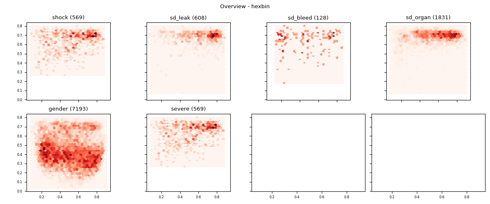

Note
Click here to download the full example code
Kde¶
- 

![01nva-003-2008, 01nva-003-2009, 01nva-003-2012, 01nva-003-2024, 01nva-003-2028, 01nva-003-2033, 01nva-003-2108, 01nva-003-2110, 01nva-003-2201, 01nva-003-2202, 01nva-003-2203, 01nva-003-2204, 01nva-003-2205, 01nva-003-2206, 01nva-003-2208, 01nva-003-2209, 01nva-003-2210, 01nva-003-2211, 01nva-003-2212, 01nva-003-2213, 01nva-003-2214, 01nva-003-2216, 01nva-003-2217, 01nva-003-2218, 01nva-003-2219, 01nva-003-2220, 01nva-003-2221, 01nva-003-2222, 01nva-003-2223, 01nva-003-2224, 01nva-003-2225, Severe - 01NVA agg](../../_images/sphx_glr_plot_examples_all_006.png)
Out:
Dtypes:
Unnamed: 0 Int64
study_no string
date string
abdominal_pain boolean
abdominal_tenderness boolean
...
sd_bleed boolean
sd_organ object
warning boolean
severe boolean
mild boolean
Length: 426, dtype: object
Data:
dsource age weight plt haematocrit_percent body_temperature gender shock sd_leak sd_bleed sd_organ date mild severe warning
study_no
01nva-003-2008 01nva 16.0 72.0 8.0 54.0 37.075 1 True False False False 2020-07-17 False True True
01nva-003-2009 01nva 17.0 44.0 8.0 47.3333 37.0 0 True True False False 2020-07-29 False True True
01nva-003-2012 01nva 17.0 48.0 9.0 49.15 37.1875 0 True True False False 2020-08-15 False True True
01nva-003-2024 01nva 16.0 114.0 9.0 49.1 37.1167 1 True True False False 2020-10-09 False True True
01nva-003-2028 01nva 18.0 82.0 18.0 42.9714 37.15 0 True True False False 2020-11-07 False True True
... ... ... ... ... ... ... ... ... ... ... ... ... ... ... ...
md-994 md 13.0 53.0 160.0 37.5 40.0 0 False False False False 2003-07-21 True False False
md-995 md 9.0 27.5 163.0 34.4 39.0 0 False False False False 2003-07-22 True False False
md-996 md 10.0 33.0 75.0 37.5 39.9 0 False False False False 2003-07-22 False False True
md-998 md 13.0 44.0 95.0 40.0 38.5 1 False False False False 2003-07-23 False False True
md-999 md 15.0 49.0 130.0 38.0 38.5 0 False False False False 2003-07-23 False False True
[12862 rows x 15 columns]
12862
shock 569
sd_leak 608
sd_bleed 128
sd_organ 1831
gender 7193
severe 569
dtype: object
Model:
Autoencoder(
(encoder): Sequential(
(0): Linear(in_features=5, out_features=3, bias=True)
(1): Sigmoid()
(2): Linear(in_features=3, out_features=2, bias=True)
(3): Sigmoid()
)
(decoder): Sequential(
(0): Linear(in_features=2, out_features=3, bias=True)
(1): Sigmoid()
(2): Linear(in_features=3, out_features=5, bias=True)
(3): Sigmoid()
)
)
Encoded:
[[0.1520529 0.74539393]
[0.2646528 0.7333292 ]
[0.23637003 0.7385248 ]
...
[0.45469382 0.5859988 ]
[0.28514162 0.559597 ]
[0.19750176 0.50580925]]
Data:
dsource age weight plt haematocrit_percent body_temperature gender shock sd_leak sd_bleed sd_organ date mild severe warning x y
study_no
01nva-003-2008 01nva 16.0 72.0 8.0 54.0 37.075 1 True False False False 2020-07-17 False True True 0.1521 0.7454
01nva-003-2009 01nva 17.0 44.0 8.0 47.3333 37.0 0 True True False False 2020-07-29 False True True 0.2647 0.7333
01nva-003-2012 01nva 17.0 48.0 9.0 49.15 37.1875 0 True True False False 2020-08-15 False True True 0.2364 0.7385
01nva-003-2024 01nva 16.0 114.0 9.0 49.1 37.1167 1 True True False False 2020-10-09 False True True 0.0784 0.7186
01nva-003-2028 01nva 18.0 82.0 18.0 42.9714 37.15 0 True True False False 2020-11-07 False True True 0.1081 0.6866
... ... ... ... ... ... ... ... ... ... ... ... ... ... ... ... ... ...
md-994 md 13.0 53.0 160.0 37.5 40.0 0 False False False False 2003-07-21 True False False 0.1914 0.4540
md-995 md 9.0 27.5 163.0 34.4 39.0 0 False False False False 2003-07-22 True False False 0.4599 0.4492
md-996 md 10.0 33.0 75.0 37.5 39.9 0 False False False False 2003-07-22 False False True 0.4547 0.5860
md-998 md 13.0 44.0 95.0 40.0 38.5 1 False False False False 2003-07-23 False False True 0.2851 0.5596
md-999 md 15.0 49.0 130.0 38.0 38.5 0 False False False False 2003-07-23 False False True 0.1975 0.5058
[12862 rows x 17 columns]
age weight plt haematocrit_percent body_temperature
409 16.0 72.0 8.0 54.0 37.0
410 16.0 72.0 18.0 42.0 37.1
411 16.0 72.0 33.0 39.1 37.2
412 16.0 72.0 103.0 39.5 37.0
415 17.0 44.0 8.0 36.3 37.0
... ... ... ... ... ...
124836 13.0 53.0 160.0 37.5 40.0
124846 9.0 27.5 163.0 34.4 39.0
124857 10.0 33.0 75.0 37.5 39.9
124877 13.0 44.0 95.0 40.0 38.5
124888 15.0 49.0 130.0 38.0 38.5
[19516 rows x 5 columns]
Unnamed: 0 study_no date abdominal_pain abdominal_tenderness abscess age aids alt antibiotic_iv ... medication_regular rur_urb sd_leak sd_bleed sd_organ warning severe mild x y
409 409 01nva-003-... 2020-07-14 True False <NA> 16.0 <NA> 62.0 <NA> ... <NA> <NA> False False False True True False 0.1520 0.7533
410 410 01nva-003-... 2020-07-15 True <NA> <NA> 16.0 <NA> <NA> <NA> ... <NA> <NA> False False 0 True True False 0.1541 0.6842
411 411 01nva-003-... 2020-07-16 True <NA> False 16.0 <NA> <NA> <NA> ... <NA> <NA> False False 0 True True False 0.1507 0.6502
412 412 01nva-003-... 2020-07-17 True <NA> <NA> 16.0 <NA> <NA> False ... <NA> <NA> False False 0 True True False 0.1380 0.5618
415 415 01nva-003-... 2020-07-28 True True False 17.0 False 17.0 <NA> ... <NA> <NA> False False False True True False 0.2679 0.6924
... ... ... ... ... ... ... ... ... ... ... ... ... ... ... ... ... ... ... ... ... ...
1289 1289 01nva-003-... 2021-01-14 False <NA> <NA> 8.0 <NA> <NA> False ... <NA> <NA> False False 0 True False False 0.7304 0.6880
1290 1290 01nva-003-... 2021-01-15 False <NA> <NA> 8.0 <NA> <NA> False ... <NA> <NA> False False 0 True False False 0.7332 0.6654
1291 1291 01nva-003-... 2021-01-16 False <NA> <NA> 8.0 <NA> <NA> False ... <NA> <NA> False False 0 True False False 0.7291 0.6473
1292 1292 01nva-003-... 2021-01-17 False <NA> <NA> 8.0 <NA> <NA> False ... <NA> <NA> False False 0 True False False 0.6697 0.5531
1296 1296 01nva-003-... 2021-01-19 False False <NA> 13.0 <NA> 20.0 <NA> ... <NA> <NA> False False 0 False False True 0.4591 0.7123
[163 rows x 428 columns]
Unnamed: 0 study_no date abdominal_pain abdominal_tenderness abscess age aids alt antibiotic_iv ... medication_regular rur_urb sd_leak sd_bleed sd_organ warning severe mild x y
409 409 01nva-003-... 2020-07-14 True False <NA> 16.0 <NA> 62.0 <NA> ... <NA> <NA> False False False True True False 0.1520 0.7533
410 410 01nva-003-... 2020-07-15 True <NA> <NA> 16.0 <NA> <NA> <NA> ... <NA> <NA> False False 0 True True False 0.1541 0.6842
411 411 01nva-003-... 2020-07-16 True <NA> False 16.0 <NA> <NA> <NA> ... <NA> <NA> False False 0 True True False 0.1507 0.6502
412 412 01nva-003-... 2020-07-17 True <NA> <NA> 16.0 <NA> <NA> False ... <NA> <NA> False False 0 True True False 0.1380 0.5618
[4 rows x 428 columns]
409 0
410 1
411 2
412 3
Name: day, dtype: int64
Unnamed: 0 study_no date abdominal_pain abdominal_tenderness abscess age aids alt antibiotic_iv ... medication_regular rur_urb sd_leak sd_bleed sd_organ warning severe mild x y
415 415 01nva-003-... 2020-07-28 True True False 17.0 False 17.0 <NA> ... <NA> <NA> False False False True True False 0.2679 0.6924
416 416 01nva-003-... 2020-07-29 True <NA> <NA> 17.0 <NA> <NA> <NA> ... <NA> <NA> True False 0 True True False 0.2565 0.7357
[2 rows x 428 columns]
415 0
416 1
Name: day, dtype: int64
Unnamed: 0 study_no date abdominal_pain abdominal_tenderness abscess age aids alt antibiotic_iv ... medication_regular rur_urb sd_leak sd_bleed sd_organ warning severe mild x y
435 435 01nva-003-... 2020-08-11 True False <NA> 17.0 False 21.0 <NA> ... <NA> <NA> True False False True True False 0.2394 0.7403
436 436 01nva-003-... 2020-08-12 True <NA> <NA> 17.0 <NA> <NA> <NA> ... <NA> <NA> True False 0 True True False 0.2361 0.7458
437 437 01nva-003-... 2020-08-13 True <NA> False 17.0 <NA> <NA> False ... <NA> <NA> True False 0 True True False 0.2263 0.7203
439 439 01nva-003-... 2020-08-15 True <NA> <NA> 17.0 <NA> <NA> False ... <NA> <NA> True False 0 True True False 0.1813 0.5592
[4 rows x 428 columns]
435 0
436 1
437 2
439 4
Name: day, dtype: int64
Unnamed: 0 study_no date abdominal_pain abdominal_tenderness abscess age aids alt antibiotic_iv ... medication_regular rur_urb sd_leak sd_bleed sd_organ warning severe mild x y
536 536 01nva-003-... 2020-10-07 True False <NA> 16.0 False 101.0 <NA> ... <NA> <NA> True False False True True False 0.0774 0.7293
537 537 01nva-003-... 2020-10-08 True <NA> False 16.0 <NA> <NA> <NA> ... <NA> <NA> True False 0 True True False 0.0798 0.7026
538 538 01nva-003-... 2020-10-09 True <NA> <NA> 16.0 <NA> <NA> False ... <NA> <NA> True False 0 True True False 0.0844 0.6265
[3 rows x 428 columns]
536 0
537 1
538 2
Name: day, dtype: int64
Unnamed: 0 study_no date abdominal_pain abdominal_tenderness abscess age aids alt antibiotic_iv ... medication_regular rur_urb sd_leak sd_bleed sd_organ warning severe mild x y
581 581 01nva-003-... 2020-11-03 True False False 18.0 False 62.0 <NA> ... <NA> <NA> True False False True True False 0.1054 0.7028
582 582 01nva-003-... 2020-11-04 True <NA> <NA> 18.0 <NA> <NA> <NA> ... <NA> <NA> True False 0 True True False 0.1073 0.6998
585 585 01nva-003-... 2020-11-07 True <NA> <NA> 18.0 <NA> <NA> False ... <NA> <NA> True False 0 True True False 0.1067 0.4257
[3 rows x 428 columns]
581 0
582 1
585 4
Name: day, dtype: int64
Unnamed: 0 study_no date abdominal_pain abdominal_tenderness abscess age aids alt antibiotic_iv ... medication_regular rur_urb sd_leak sd_bleed sd_organ warning severe mild x y
612 612 01nva-003-... 2021-01-12 True True False 17.0 False 189.0 <NA> ... <NA> <NA> True False False True True False 0.2220 0.7245
613 613 01nva-003-... 2021-01-13 True <NA> <NA> 17.0 <NA> <NA> <NA> ... <NA> <NA> True False 0 True True False 0.2206 0.7144
614 614 01nva-003-... 2021-01-14 True <NA> <NA> 17.0 <NA> <NA> False ... <NA> <NA> True False 0 True True False 0.2037 0.6508
[3 rows x 428 columns]
612 0
613 1
614 2
Name: day, dtype: int64
Unnamed: 0 study_no date abdominal_pain abdominal_tenderness abscess age aids alt antibiotic_iv ... medication_regular rur_urb sd_leak sd_bleed sd_organ warning severe mild x y
703 703 01nva-003-... 2020-10-08 True False False 17.0 <NA> 114.0 <NA> ... <NA> <NA> True False False True True False 0.1713 0.7079
704 704 01nva-003-... 2020-10-09 True <NA> <NA> 17.0 <NA> <NA> <NA> ... <NA> <NA> True False 0 True True False 0.1688 0.6654
705 705 01nva-003-... 2020-10-10 True <NA> <NA> 17.0 <NA> <NA> False ... <NA> <NA> True False 0 True True False 0.1585 0.6475
706 706 01nva-003-... 2020-10-11 True <NA> <NA> 17.0 <NA> <NA> False ... <NA> <NA> True False 0 True True False 0.1479 0.5820
[4 rows x 428 columns]
703 0
704 1
705 2
706 3
Name: day, dtype: int64
Unnamed: 0 study_no date abdominal_pain abdominal_tenderness abscess age aids alt antibiotic_iv ... medication_regular rur_urb sd_leak sd_bleed sd_organ warning severe mild x y
719 719 01nva-003-... 2020-11-04 True False <NA> 17.0 <NA> 27.0 <NA> ... <NA> <NA> True False False True True False 0.2287 0.7627
720 720 01nva-003-... 2020-11-05 True <NA> False 17.0 <NA> 58.0 <NA> ... <NA> <NA> True False 0 True True False 0.2275 0.7677
721 721 01nva-003-... 2020-11-06 True <NA> <NA> 17.0 <NA> <NA> False ... <NA> <NA> True False 0 True True False 0.2106 0.6946
722 722 01nva-003-... 2020-11-07 True <NA> <NA> 17.0 <NA> <NA> False ... <NA> <NA> True False 0 True True False 0.1829 0.5812
723 723 01nva-003-... 2020-11-08 True <NA> <NA> 17.0 <NA> <NA> False ... <NA> <NA> True False 0 True True False 0.1582 0.4849
[5 rows x 428 columns]
719 0
720 1
721 2
722 3
723 4
Name: day, dtype: int64
Unnamed: 0 study_no date abdominal_pain abdominal_tenderness abscess age aids alt antibiotic_iv ... medication_regular rur_urb sd_leak sd_bleed sd_organ warning severe mild x y
1061 1061 01nva-003-... 2020-06-05 False False <NA> 9.0 <NA> 57.0 <NA> ... <NA> <NA> False False False True True False 0.5640 0.6907
1062 1062 01nva-003-... 2020-06-06 False <NA> False 9.0 <NA> <NA> False ... <NA> <NA> False False 0 True True False 0.5487 0.6564
1063 1063 01nva-003-... 2020-06-07 False <NA> <NA> 9.0 <NA> <NA> False ... <NA> <NA> False False 0 True True False 0.5224 0.5932
[3 rows x 428 columns]
1061 0
1062 1
1063 2
Name: day, dtype: int64
Unnamed: 0 study_no date abdominal_pain abdominal_tenderness abscess age aids alt antibiotic_iv ... medication_regular rur_urb sd_leak sd_bleed sd_organ warning severe mild x y
1068 1068 01nva-003-... 2020-06-15 False True False 13.0 <NA> 267.0 <NA> ... <NA> <NA> False False False True True False 0.2071 0.6812
1069 1069 01nva-003-... 2020-06-16 False <NA> <NA> 13.0 <NA> <NA> False ... <NA> <NA> False False 0 True True False 0.2073 0.7022
1070 1070 01nva-003-... 2020-06-17 False <NA> <NA> 13.0 <NA> 146.0 False ... <NA> <NA> False False 0 True True False 0.2019 0.6532
1072 1072 01nva-003-... 2020-06-19 False <NA> <NA> 13.0 <NA> <NA> <NA> ... <NA> <NA> False False 0 True True False 0.1863 0.5571
[4 rows x 428 columns]
1068 0
1069 1
1070 2
1072 4
Name: day, dtype: int64
Unnamed: 0 study_no date abdominal_pain abdominal_tenderness abscess age aids alt antibiotic_iv ... medication_regular rur_urb sd_leak sd_bleed sd_organ warning severe mild x y
1075 1075 01nva-003-... 2020-06-16 True False <NA> 10.0 <NA> 51.0 <NA> ... <NA> <NA> False False False True True False 0.6026 0.6597
1076 1076 01nva-003-... 2020-06-17 True <NA> <NA> 10.0 <NA> <NA> False ... <NA> <NA> True False 0 True True False 0.6426 0.7243
1077 1077 01nva-003-... 2020-06-18 True <NA> <NA> 10.0 <NA> <NA> False ... <NA> <NA> True False 0 True True False 0.6401 0.6647
1078 1078 01nva-003-... 2020-06-19 True <NA> <NA> 10.0 <NA> <NA> False ... <NA> <NA> True False 0 True True False 0.6071 0.6068
[4 rows x 428 columns]
1075 0
1076 1
1077 2
1078 3
Name: day, dtype: int64
Unnamed: 0 study_no date abdominal_pain abdominal_tenderness abscess age aids alt antibiotic_iv ... medication_regular rur_urb sd_leak sd_bleed sd_organ warning severe mild x y
1084 1084 01nva-003-... 2020-06-25 True True <NA> 13.0 False 60.0 <NA> ... <NA> <NA> True False False True True False 0.1754 0.6672
1085 1085 01nva-003-... 2020-06-26 True <NA> False 13.0 <NA> <NA> False ... <NA> <NA> True False 0 True True False 0.1773 0.6860
1086 1086 01nva-003-... 2020-06-27 True <NA> <NA> 13.0 <NA> <NA> False ... <NA> <NA> True False 0 True True False 0.2096 0.4232
[3 rows x 428 columns]
1084 0
1085 1
1086 2
Name: day, dtype: int64
Unnamed: 0 study_no date abdominal_pain abdominal_tenderness abscess age aids alt antibiotic_iv ... medication_regular rur_urb sd_leak sd_bleed sd_organ warning severe mild x y
1090 1090 01nva-003-... 2020-07-01 False False <NA> 13.0 False 37.5 <NA> ... <NA> <NA> False False False False True False 0.4622 0.6903
1091 1091 01nva-003-... 2020-07-02 False <NA> False 13.0 <NA> <NA> False ... <NA> <NA> False False 0 False True False 0.4774 0.7166
1092 1092 01nva-003-... 2020-07-03 False <NA> <NA> 13.0 <NA> <NA> False ... <NA> <NA> False False 0 False True False 0.4465 0.6562
1093 1093 01nva-003-... 2020-07-04 False <NA> <NA> 13.0 <NA> <NA> False ... <NA> <NA> False False 0 False True False 0.4137 0.6122
1094 1094 01nva-003-... 2020-07-05 False <NA> <NA> 13.0 <NA> <NA> <NA> ... <NA> <NA> False False 0 False True False 0.3363 0.5241
[5 rows x 428 columns]
1090 0
1091 1
1092 2
1093 3
1094 4
Name: day, dtype: int64
Unnamed: 0 study_no date abdominal_pain abdominal_tenderness abscess age aids alt antibiotic_iv ... medication_regular rur_urb sd_leak sd_bleed sd_organ warning severe mild x y
1097 1097 01nva-003-... 2020-07-08 False False <NA> 12.0 False 27.0 <NA> ... <NA> <NA> False False False False True False 0.3503 0.6081
1098 1098 01nva-003-... 2020-07-09 False <NA> <NA> 12.0 <NA> <NA> False ... <NA> <NA> False False 0 False True False 0.4540 0.7297
1099 1099 01nva-003-... 2020-07-10 False <NA> False 12.0 <NA> <NA> False ... <NA> <NA> False False 0 False True False 0.4517 0.6917
1100 1100 01nva-003-... 2020-07-11 False <NA> <NA> 12.0 <NA> <NA> False ... <NA> <NA> False False 0 False True False 0.3983 0.6086
[4 rows x 428 columns]
1097 0
1098 1
1099 2
1100 3
Name: day, dtype: int64
Unnamed: 0 study_no date abdominal_pain abdominal_tenderness abscess age aids alt antibiotic_iv ... medication_regular rur_urb sd_leak sd_bleed sd_organ warning severe mild x y
1115 1115 01nva-003-... 2020-07-21 True False <NA> 12.0 False 40.0 <NA> ... <NA> <NA> False False False True True False 0.3124 0.6388
1116 1116 01nva-003-... 2020-07-22 True <NA> False 12.0 <NA> <NA> <NA> ... <NA> <NA> False False 0 True True False 0.3525 0.6655
[2 rows x 428 columns]
1115 0
1116 1
Name: day, dtype: int64
Unnamed: 0 study_no date abdominal_pain abdominal_tenderness abscess age aids alt antibiotic_iv ... medication_regular rur_urb sd_leak sd_bleed sd_organ warning severe mild x y
1121 1121 01nva-003-... 2020-07-31 False True <NA> 10.0 <NA> 36.0 <NA> ... <NA> <NA> True False False True True False 0.6242 0.6530
1122 1122 01nva-003-... 2020-08-01 False <NA> False 10.0 <NA> <NA> False ... <NA> <NA> True False 0 True True False 0.5879 0.6435
1123 1123 01nva-003-... 2020-08-02 False <NA> <NA> 10.0 <NA> <NA> False ... <NA> <NA> True False 0 True True False 0.5353 0.5295
[3 rows x 428 columns]
1121 0
1122 1
1123 2
Name: day, dtype: int64
Unnamed: 0 study_no date abdominal_pain abdominal_tenderness abscess age aids alt antibiotic_iv ... medication_regular rur_urb sd_leak sd_bleed sd_organ warning severe mild x y
1128 1128 01nva-003-... 2020-08-05 False True <NA> 10.0 False 405.0 <NA> ... <NA> <NA> False False False False True False 0.4592 0.6851
1129 1129 01nva-003-... 2020-08-06 False <NA> <NA> 10.0 <NA> <NA> <NA> ... <NA> <NA> False False 0 False True False 0.4436 0.6457
[2 rows x 428 columns]
1128 0
1129 1
Name: day, dtype: int64
Unnamed: 0 study_no date abdominal_pain abdominal_tenderness abscess age aids alt antibiotic_iv ... medication_regular rur_urb sd_leak sd_bleed sd_organ warning severe mild x y
1133 1133 01nva-003-... 2020-08-06 True False <NA> 9.0 False 8.5 <NA> ... <NA> <NA> False False 0 True False False 0.6867 0.7356
1134 1134 01nva-003-... 2020-08-07 True <NA> <NA> 9.0 <NA> <NA> <NA> ... <NA> <NA> False False 0 True False False 0.6931 0.6943
1135 1135 01nva-003-... 2020-08-08 True <NA> <NA> 9.0 <NA> <NA> False ... <NA> <NA> False False 0 True False False 0.6937 0.6809
1136 1136 01nva-003-... 2020-08-09 True <NA> <NA> 9.0 <NA> <NA> False ... <NA> <NA> False False 0 True False False 0.6071 0.5541
[4 rows x 428 columns]
1133 0
1134 1
1135 2
1136 3
Name: day, dtype: int64
Unnamed: 0 study_no date abdominal_pain abdominal_tenderness abscess age aids alt antibiotic_iv ... medication_regular rur_urb sd_leak sd_bleed sd_organ warning severe mild x y
1141 1141 01nva-003-... 2020-08-21 True False False 11.0 False 39.0 <NA> ... <NA> <NA> False False False True True False 0.4347 0.6849
[1 rows x 428 columns]
1141 0
Name: day, dtype: int64
Unnamed: 0 study_no date abdominal_pain abdominal_tenderness abscess age aids alt antibiotic_iv ... medication_regular rur_urb sd_leak sd_bleed sd_organ warning severe mild x y
1147 1147 01nva-003-... 2020-08-22 False False <NA> 11.0 False 113.0 <NA> ... <NA> <NA> False False False True True False 0.3406 0.6660
1148 1148 01nva-003-... 2020-08-23 False <NA> False 11.0 <NA> 129.0 <NA> ... <NA> <NA> False False 0 False True False 0.3662 0.6778
1149 1149 01nva-003-... 2020-08-24 False <NA> <NA> 11.0 <NA> 115.0 False ... <NA> <NA> False False 0 False True False 0.3417 0.6401
1150 1150 01nva-003-... 2020-08-25 False <NA> <NA> 11.0 <NA> <NA> False ... <NA> <NA> False False 0 False True False 0.2906 0.5324
[4 rows x 428 columns]
1147 0
1148 1
1149 2
1150 3
Name: day, dtype: int64
Unnamed: 0 study_no date abdominal_pain abdominal_tenderness abscess age aids alt antibiotic_iv ... medication_regular rur_urb sd_leak sd_bleed sd_organ warning severe mild x y
1154 1154 01nva-003-... 2020-08-24 True False False 12.0 False 19.0 <NA> ... <NA> <NA> False False False True True False 0.5074 0.6810
1155 1155 01nva-003-... 2020-08-25 True <NA> <NA> 12.0 <NA> <NA> <NA> ... <NA> <NA> False False 0 True True False 0.5123 0.7092
1156 1156 01nva-003-... 2020-08-26 True <NA> <NA> 12.0 <NA> <NA> False ... <NA> <NA> False False 0 True True False 0.4973 0.6541
1157 1157 01nva-003-... 2020-08-27 True <NA> <NA> 12.0 <NA> <NA> False ... <NA> <NA> False False 0 True True False 0.4609 0.6153
[4 rows x 428 columns]
1154 0
1155 1
1156 2
1157 3
Name: day, dtype: int64
Unnamed: 0 study_no date abdominal_pain abdominal_tenderness abscess age aids alt antibiotic_iv ... medication_regular rur_urb sd_leak sd_bleed sd_organ warning severe mild x y
1160 1160 01nva-003-... 2020-09-07 True True <NA> 14.0 False 12.0 <NA> ... <NA> <NA> False False False True False False 0.3222 0.7031
1161 1161 01nva-003-... 2020-09-08 True <NA> <NA> 14.0 <NA> <NA> <NA> ... <NA> <NA> False False 0 True False False 0.3405 0.7258
1162 1162 01nva-003-... 2020-09-09 True <NA> <NA> 14.0 <NA> <NA> False ... <NA> <NA> False False 0 True False False 0.3367 0.6850
1163 1163 01nva-003-... 2020-09-10 True <NA> <NA> 14.0 <NA> <NA> False ... <NA> <NA> False False 0 True False False 0.3308 0.6581
1164 1164 01nva-003-... 2020-09-11 True <NA> <NA> 14.0 <NA> <NA> False ... <NA> <NA> False False 0 True False False 0.2708 0.5571
[5 rows x 428 columns]
1160 0
1161 1
1162 2
1163 3
1164 4
Name: day, dtype: int64
Unnamed: 0 study_no date abdominal_pain abdominal_tenderness abscess age aids alt antibiotic_iv ... medication_regular rur_urb sd_leak sd_bleed sd_organ warning severe mild x y
1168 1168 01nva-003-... 2020-09-09 True True <NA> 14.0 False 82.0 <NA> ... <NA> <NA> False False False True False False 0.3325 0.7095
1169 1169 01nva-003-... 2020-09-10 True <NA> <NA> 14.0 <NA> <NA> <NA> ... <NA> <NA> False False 0 True False False 0.3471 0.6991
1170 1170 01nva-003-... 2020-09-11 True <NA> <NA> 14.0 <NA> 117.0 False ... <NA> <NA> False False 0 True False False 0.3456 0.6801
1171 1171 01nva-003-... 2020-09-12 True <NA> <NA> 14.0 <NA> <NA> False ... <NA> <NA> False False 0 True False False 0.3271 0.6198
1172 1172 01nva-003-... 2020-09-13 True <NA> <NA> 14.0 <NA> <NA> False ... <NA> <NA> False False 0 True False False 0.2791 0.5503
[5 rows x 428 columns]
1168 0
1169 1
1170 2
1171 3
1172 4
Name: day, dtype: int64
Unnamed: 0 study_no date abdominal_pain abdominal_tenderness abscess age aids alt antibiotic_iv ... medication_regular rur_urb sd_leak sd_bleed sd_organ warning severe mild x y
1175 1175 01nva-003-... 2020-09-14 True True <NA> 11.0 False 32.0 <NA> ... <NA> <NA> False False 0 True True False 0.5787 0.7280
1176 1176 01nva-003-... 2020-09-15 True <NA> <NA> 11.0 <NA> 28.0 <NA> ... <NA> <NA> False False 0 True True False 0.5609 0.6945
1177 1177 01nva-003-... 2020-09-16 True <NA> <NA> 11.0 <NA> <NA> False ... <NA> <NA> False False 0 True True False 0.5497 0.6808
[3 rows x 428 columns]
1175 0
1176 1
1177 2
Name: day, dtype: int64
Unnamed: 0 study_no date abdominal_pain abdominal_tenderness abscess age aids alt antibiotic_iv ... medication_regular rur_urb sd_leak sd_bleed sd_organ warning severe mild x y
1183 1183 01nva-003-... 2020-09-18 True True <NA> 12.0 <NA> 135.0 <NA> ... <NA> <NA> False False 0 True False False 0.4707 0.7127
1184 1184 01nva-003-... 2020-09-19 True <NA> <NA> 12.0 <NA> <NA> <NA> ... <NA> <NA> False False 0 True False False 0.4570 0.6888
1185 1185 01nva-003-... 2020-09-20 True <NA> <NA> 12.0 <NA> 333.0 False ... <NA> <NA> False False 0 True False False 0.4230 0.6383
[3 rows x 428 columns]
1183 0
1184 1
1185 2
Name: day, dtype: int64
Unnamed: 0 study_no date abdominal_pain abdominal_tenderness abscess age aids alt antibiotic_iv ... medication_regular rur_urb sd_leak sd_bleed sd_organ warning severe mild x y
1190 1190 01nva-003-... 2020-09-25 False True <NA> 15.0 <NA> 109.0 <NA> ... <NA> <NA> False False False False False True 0.1877 0.7468
1191 1191 01nva-003-... 2020-09-26 False <NA> <NA> 15.0 <NA> <NA> <NA> ... <NA> <NA> False False 0 False False True 0.1899 0.6826
1192 1192 01nva-003-... 2020-09-27 False <NA> <NA> 15.0 <NA> <NA> False ... <NA> <NA> False False 0 False False True 0.1703 0.6015
[3 rows x 428 columns]
1190 0
1191 1
1192 2
Name: day, dtype: int64
Unnamed: 0 study_no date abdominal_pain abdominal_tenderness abscess age aids alt antibiotic_iv ... medication_regular rur_urb sd_leak sd_bleed sd_organ warning severe mild x y
1195 1195 01nva-003-... 2020-09-28 True True <NA> 12.0 False 36.0 <NA> ... <NA> <NA> False False False True False False 0.4060 0.7199
1196 1196 01nva-003-... 2020-09-29 True <NA> <NA> 12.0 <NA> <NA> <NA> ... <NA> <NA> False False 0 True False False 0.4163 0.6501
1197 1197 01nva-003-... 2020-09-30 True <NA> <NA> 12.0 <NA> <NA> False ... <NA> <NA> False False 0 True False False 0.3769 0.5888
[3 rows x 428 columns]
1195 0
1196 1
1197 2
Name: day, dtype: int64
Unnamed: 0 study_no date abdominal_pain abdominal_tenderness abscess age aids alt antibiotic_iv ... medication_regular rur_urb sd_leak sd_bleed sd_organ warning severe mild x y
1201 1201 01nva-003-... 2020-10-01 True True <NA> 8.0 False 38.0 <NA> ... <NA> <NA> False False 0 True True False 0.5851 0.6818
1202 1202 01nva-003-... 2020-10-02 True <NA> <NA> 8.0 <NA> <NA> <NA> ... <NA> <NA> False False 0 True True False 0.5856 0.7984
1203 1203 01nva-003-... 2020-10-03 True <NA> <NA> 8.0 <NA> <NA> False ... <NA> <NA> False False 0 True True False 0.5999 0.6591
1204 1204 01nva-003-... 2020-10-04 True <NA> <NA> 8.0 <NA> <NA> False ... <NA> <NA> False False 0 True True False 0.5951 0.6078
1205 1205 01nva-003-... 2020-10-05 True <NA> <NA> 8.0 <NA> <NA> False ... <NA> <NA> False False 0 True True False 0.5092 0.5002
[5 rows x 428 columns]
1201 0
1202 1
1203 2
1204 3
1205 4
Name: day, dtype: int64
Unnamed: 0 study_no date abdominal_pain abdominal_tenderness abscess age aids alt antibiotic_iv ... medication_regular rur_urb sd_leak sd_bleed sd_organ warning severe mild x y
1208 1208 01nva-003-... 2020-10-07 True True <NA> 6.0 False 40.0 <NA> ... <NA> <NA> False False 0 True False False 0.7882 0.7130
1209 1209 01nva-003-... 2020-10-08 True <NA> <NA> 6.0 <NA> <NA> <NA> ... <NA> <NA> False False 0 True False False 0.7872 0.7237
1210 1210 01nva-003-... 2020-10-09 True <NA> <NA> 6.0 <NA> <NA> False ... <NA> <NA> False False 0 True False False 0.7923 0.7077
1212 1212 01nva-003-... 2020-10-11 True <NA> <NA> 6.0 <NA> <NA> False ... <NA> <NA> False False 0 True False False 0.7526 0.5946
[4 rows x 428 columns]
1208 0
1209 1
1210 2
1212 4
Name: day, dtype: int64
Unnamed: 0 study_no date abdominal_pain abdominal_tenderness abscess age aids alt antibiotic_iv ... medication_regular rur_urb sd_leak sd_bleed sd_organ warning severe mild x y
1216 1216 01nva-003-... 2020-10-08 False True <NA> 14.0 <NA> 54.0 <NA> ... <NA> <NA> False False 0 False False True 0.1350 0.6725
1217 1217 01nva-003-... 2020-10-09 False <NA> <NA> 14.0 <NA> <NA> <NA> ... <NA> <NA> False False 0 False False True 0.1476 0.6594
1218 1218 01nva-003-... 2020-10-10 False <NA> <NA> 14.0 <NA> <NA> False ... <NA> <NA> False False 0 False False True 0.1355 0.6546
[3 rows x 428 columns]
1216 0
1217 1
1218 2
Name: day, dtype: int64
Unnamed: 0 study_no date abdominal_pain abdominal_tenderness abscess age aids alt antibiotic_iv ... medication_regular rur_urb sd_leak sd_bleed sd_organ warning severe mild x y
1222 1222 01nva-003-... 2020-10-09 True True <NA> 11.0 <NA> 110.0 <NA> ... <NA> <NA> False False 0 True True False 0.3991 0.6789
1223 1223 01nva-003-... 2020-10-10 True <NA> <NA> 11.0 <NA> 78.0 <NA> ... <NA> <NA> False False 0 True True False 0.4237 0.6814
1224 1224 01nva-003-... 2020-10-11 True <NA> <NA> 11.0 <NA> 67.0 False ... <NA> <NA> False False 0 True True False 0.4113 0.6593
1225 1225 01nva-003-... 2020-10-12 True <NA> <NA> 11.0 <NA> <NA> False ... <NA> <NA> False False 0 True True False 0.3755 0.5951
[4 rows x 428 columns]
1222 0
1223 1
1224 2
1225 3
Name: day, dtype: int64
Unnamed: 0 study_no date abdominal_pain abdominal_tenderness abscess age aids alt antibiotic_iv ... medication_regular rur_urb sd_leak sd_bleed sd_organ warning severe mild x y
1228 1228 01nva-003-... 2020-10-16 True True <NA> 12.0 False 51.0 <NA> ... <NA> <NA> False False 0 True False False 0.5178 0.6648
1229 1229 01nva-003-... 2020-10-17 True <NA> <NA> 12.0 <NA> <NA> <NA> ... <NA> <NA> False False 0 True False False 0.5497 0.6880
1230 1230 01nva-003-... 2020-10-18 True <NA> <NA> 12.0 <NA> 43.0 False ... <NA> <NA> False False 0 True False False 0.5362 0.6545
[3 rows x 428 columns]
1228 0
1229 1
1230 2
Name: day, dtype: int64
Unnamed: 0 study_no date abdominal_pain abdominal_tenderness abscess age aids alt antibiotic_iv ... medication_regular rur_urb sd_leak sd_bleed sd_organ warning severe mild x y
1233 1233 01nva-003-... 2020-10-22 True True <NA> 12.0 False 175.0 <NA> ... <NA> <NA> False False 0 True False False 0.4012 0.6938
1234 1234 01nva-003-... 2020-10-23 True <NA> <NA> 12.0 <NA> <NA> <NA> ... <NA> <NA> False False 0 True False False 0.4048 0.6901
1235 1235 01nva-003-... 2020-10-24 True <NA> <NA> 12.0 <NA> 121.0 False ... <NA> <NA> False False 0 True False False 0.4066 0.6833
1236 1236 01nva-003-... 2020-10-25 True <NA> <NA> 12.0 <NA> <NA> False ... <NA> <NA> False False 0 True False False 0.3733 0.6841
1237 1237 01nva-003-... 2020-10-26 True <NA> <NA> 12.0 <NA> <NA> False ... <NA> <NA> False False 0 True False False 0.3319 0.6028
[5 rows x 428 columns]
1233 0
1234 1
1235 2
1236 3
1237 4
Name: day, dtype: int64
Unnamed: 0 study_no date abdominal_pain abdominal_tenderness abscess age aids alt antibiotic_iv ... medication_regular rur_urb sd_leak sd_bleed sd_organ warning severe mild x y
1241 1241 01nva-003-... 2020-10-23 True True <NA> 8.0 False 149.0 <NA> ... <NA> <NA> False False 0 True True False 0.6564 0.7000
1242 1242 01nva-003-... 2020-10-24 True <NA> <NA> 8.0 <NA> 79.0 <NA> ... <NA> <NA> False False 0 True True False 0.6581 0.7222
1243 1243 01nva-003-... 2020-10-25 True <NA> <NA> 8.0 <NA> <NA> False ... <NA> <NA> False False 0 True True False 0.6549 0.6832
[3 rows x 428 columns]
1241 0
1242 1
1243 2
Name: day, dtype: int64
Unnamed: 0 study_no date abdominal_pain abdominal_tenderness abscess age aids alt antibiotic_iv ... medication_regular rur_urb sd_leak sd_bleed sd_organ warning severe mild x y
1250 1250 01nva-003-... 2020-11-02 True True <NA> 11.0 <NA> 51.0 <NA> ... <NA> <NA> False False 0 True False False 0.4939 0.6815
1251 1251 01nva-003-... 2020-11-03 True <NA> <NA> 11.0 <NA> <NA> <NA> ... <NA> <NA> False False 0 True False False 0.4833 0.6647
1252 1252 01nva-003-... 2020-11-04 True <NA> <NA> 11.0 <NA> <NA> False ... <NA> <NA> False False 0 True False False 0.4694 0.6740
[3 rows x 428 columns]
1250 0
1251 1
1252 2
Name: day, dtype: int64
Unnamed: 0 study_no date abdominal_pain abdominal_tenderness abscess age aids alt antibiotic_iv ... medication_regular rur_urb sd_leak sd_bleed sd_organ warning severe mild x y
1255 1255 01nva-003-... 2020-11-23 True True <NA> 10.0 False 78.0 <NA> ... <NA> <NA> False False 0 True False False 0.4417 0.6545
1256 1256 01nva-003-... 2020-11-24 True <NA> <NA> 10.0 <NA> <NA> <NA> ... <NA> <NA> False False 0 True False False 0.4960 0.6822
[2 rows x 428 columns]
1255 0
1256 1
Name: day, dtype: int64
Unnamed: 0 study_no date abdominal_pain abdominal_tenderness abscess age aids alt antibiotic_iv ... medication_regular rur_urb sd_leak sd_bleed sd_organ warning severe mild x y
1262 1262 01nva-003-... 2020-12-02 True True <NA> 9.0 <NA> 69.0 <NA> ... <NA> <NA> False False False True False False 0.5155 0.6582
1263 1263 01nva-003-... 2020-12-03 True <NA> False 9.0 <NA> <NA> <NA> ... <NA> <NA> False False 0 True False False 0.5467 0.6913
1264 1264 01nva-003-... 2020-12-04 True <NA> <NA> 9.0 <NA> 72.0 False ... <NA> <NA> False False 0 True False False 0.5307 0.6468
1265 1265 01nva-003-... 2020-12-05 True <NA> <NA> 9.0 <NA> <NA> False ... <NA> <NA> False False 0 True False False 0.4539 0.5277
[4 rows x 428 columns]
1262 0
1263 1
1264 2
1265 3
Name: day, dtype: int64
Unnamed: 0 study_no date abdominal_pain abdominal_tenderness abscess age aids alt antibiotic_iv ... medication_regular rur_urb sd_leak sd_bleed sd_organ warning severe mild x y
1269 1269 01nva-003-... 2020-12-16 False False False 9.0 <NA> 47.5 <NA> ... <NA> <NA> True False False True True False 0.6159 0.6661
1270 1270 01nva-003-... 2020-12-17 False <NA> <NA> 9.0 <NA> 93.0 <NA> ... <NA> <NA> True False 0 True True False 0.6617 0.7312
1271 1271 01nva-003-... 2020-12-18 False <NA> <NA> 9.0 <NA> 155.0 False ... <NA> <NA> True False 0 True True False 0.6436 0.6654
1272 1272 01nva-003-... 2020-12-19 False <NA> <NA> 9.0 <NA> <NA> False ... <NA> <NA> True False 0 True True False 0.5704 0.5876
[4 rows x 428 columns]
1269 0
1270 1
1271 2
1272 3
Name: day, dtype: int64
Unnamed: 0 study_no date abdominal_pain abdominal_tenderness abscess age aids alt antibiotic_iv ... medication_regular rur_urb sd_leak sd_bleed sd_organ warning severe mild x y
1274 1274 01nva-003-... 2020-12-29 True True <NA> 6.0 False 250.0 <NA> ... <NA> <NA> False False False True False False 0.7616 0.7211
1275 1275 01nva-003-... 2020-12-30 True <NA> False 6.0 <NA> <NA> <NA> ... <NA> <NA> False False 0 True False False 0.7671 0.7080
[2 rows x 428 columns]
1274 0
1275 1
Name: day, dtype: int64
Unnamed: 0 study_no date abdominal_pain abdominal_tenderness abscess age aids alt antibiotic_iv ... medication_regular rur_urb sd_leak sd_bleed sd_organ warning severe mild x y
1281 1281 01nva-003-... 2021-01-05 True True <NA> 13.0 <NA> 36.5 <NA> ... <NA> <NA> False False False True False False 0.2597 0.7295
1282 1282 01nva-003-... 2021-01-06 True <NA> False 13.0 <NA> <NA> <NA> ... <NA> <NA> False False 0 True False False 0.2449 0.7032
1283 1283 01nva-003-... 2021-01-07 True <NA> <NA> 13.0 <NA> <NA> False ... <NA> <NA> False False 0 True False False 0.2531 0.6807
1284 1284 01nva-003-... 2021-01-08 True <NA> <NA> 13.0 <NA> <NA> False ... <NA> <NA> False False 0 True False False 0.2193 0.5474
[4 rows x 428 columns]
1281 0
1282 1
1283 2
1284 3
Name: day, dtype: int64
Unnamed: 0 study_no date abdominal_pain abdominal_tenderness abscess age aids alt antibiotic_iv ... medication_regular rur_urb sd_leak sd_bleed sd_organ warning severe mild x y
1287 1287 01nva-003-... 2021-01-12 False False <NA> 8.0 <NA> 35.0 <NA> ... <NA> <NA> False False 0 True False False 0.7055 0.6756
1288 1288 01nva-003-... 2021-01-13 False <NA> False 8.0 <NA> 41.0 <NA> ... <NA> <NA> False False 0 True False False 0.7277 0.7213
1289 1289 01nva-003-... 2021-01-14 False <NA> <NA> 8.0 <NA> <NA> False ... <NA> <NA> False False 0 True False False 0.7304 0.6880
1290 1290 01nva-003-... 2021-01-15 False <NA> <NA> 8.0 <NA> <NA> False ... <NA> <NA> False False 0 True False False 0.7332 0.6654
1291 1291 01nva-003-... 2021-01-16 False <NA> <NA> 8.0 <NA> <NA> False ... <NA> <NA> False False 0 True False False 0.7291 0.6473
1292 1292 01nva-003-... 2021-01-17 False <NA> <NA> 8.0 <NA> <NA> False ... <NA> <NA> False False 0 True False False 0.6697 0.5531
[6 rows x 428 columns]
1287 0
1288 1
1289 2
1290 3
1291 4
1292 5
Name: day, dtype: int64
"\nfrom sklearn.neighbors import KernelDensity\nX = data[['x', 'y']]\nkde = KernelDensity(kernel='gaussian', bandwidth=0.2).fit(X)\nscores = kde.score_samples(X)\n\nprint(scores)\n"
6 7 8 9 10 11 12 13 14 15 16 17 18 19 20 21 22 23 24 25 26 27 28 29 30 31 32 33 34 35 36 37 38 39 40 41 42 43 44 45 46 47 48 49 50 51 52 53 54 55 56 57 58 59 60 61 62 63 64 65 66 67 68 69 70 71 72 73 74 75 76 77 78 79 80 81 82 83 84 85 86 87 88 89 90 91 92 93 94 95 96 97 98 99 100 101 102 103 104 105 106 107 108 109 110 111 112 113 114 115 116 117 118 119 120 121 122 123 124 125 126 127 128 129 130 131 132 133 134 135 136 137 138 139 140 141 142 143 144 145 146 147 148 149 150 151 152 153 154 155 156 157 158 159 160 161 162 163 164 165 166 167 168 169 170 171 172 173 174 175 176 177 178 179 180 181 182 183 184 185 186 187 188 189 190 191 192 193 194 195 196 197 198 199 200 201 202 203 204 205 206 207 208 209 210 211 212 213 214 215 216 217 218 219 220 221 222 223 224 225 226 227 228 229 230 231 232 233 234 235 236 237 238 239 240 241 242 243 244 245 246 247 248 249 250 251 252 253 254 255 256 257 258 259 260 261 262 263 264 265 266 267 268 269 270 271 272 273 274 275 276 277 278 279 280 281 282 283 284 285 286 287 288 289 290 291 292 293 294 295 296 297 298 299 300 301 302 303 304 305 306 307 308 309 310 311 312 313 314 315 316 317 318 319 320 321 322 323 324 325 326 327 328 329 330 331 332 333 334 335 336 337 338 339 340 341 342 343 344 345 346 347 348 349 350 351 352 353 354 355 356 357 358 359 360 361 362 363 364 365 366 367 368 369 370 371 372 373 374 375 376 377 378 379 380 381 382 383 384 385 386 387 388 389 390 391 392 393 394 395 396 397 398 399 400 401 402 403 404 405 406 407 408 409 410 411 412 413 414 415 416 417 418 419 420 421 422 423 424 425 426 427 428 429 430 431 432 433 434 435 436 437 438 439 440 441 442 443 444 445 446 447 448 449 450 451 452 453 454 455 456 457 458 459 460 461 462 463 464 465 466 467 468 469 470 471 472 473 474 475 476 477 478 479 480 481 482 483 484 485 486 487 488 489 490 491 492 493 494 495 496 497 498 499 500 501 502 503 504 505 506 507 508 509 510 511 512 513 514 515 516 517 518 519 520 521 522 523 524 525 526 527 528 529 530 531 532 533 534 535 536 537 538 539 540 541 542 543 544 545 546 547 548 549 550 551 552 553 554 555 556 557 558 559 560 561 562 563 564 565 566 567 568 569 570 571 572 573 574 575 576 577 578 579 580 581 582 583 | # Library
import pickle
import pandas as pd
import numpy as np
import matplotlib as mpl
# Specific
from torch.utils.data import DataLoader
from sklearn.preprocessing import MinMaxScaler
from sklearn.neighbors import KDTree
from tableone import TableOne
# Specific
from pkgname.core.AE.autoencoder import get_device, set_seed
from pkgname.utils.data_loader import load_dengue, IQR_rule
from pkgname.utils.plot_utils import format_table_bootstrap
from definitions import ROOT_DIR
# ----------------------------
# set basic configuration
# ----------------------------
# Matplotlib options
mpl.rc('font', size=8)
mpl.rc('legend', fontsize=6)
mpl.rc('xtick', labelsize=6)
mpl.rc('ytick', labelsize=6)
# Set pandas configuration.
pd.set_option('display.max_colwidth', 14)
pd.set_option('display.width', 150)
pd.set_option('display.precision', 4)
# ------------------------------
# Constants
# ------------------------------
features = [
"age",
"weight",
"plt",
"haematocrit_percent",
"body_temperature"
]
outcomes = [
"shock",
#"ascites",
#"overload",
#"oedema_pulmonary",
#"respiratory_distress",
#"ventilation",
#"diuretics",
#"bleeding_gi",
#"bleeding_urine",
#"bleeding_severe",
#"bleeding_mucosal",
#"bleeding_skin",
#"vomiting", # is this vomiting blood?
#"abdominal_pain",
#"cns_abnormal",
"sd_leak",
"sd_bleed",
"sd_organ",
"gender",
"severe"]
others = [
'study_no',
'dsource',
'date'
]
mappings = {
'gender': {
'Female': 0,
'Male': 1
}
}
aggregation = {
'dsource': 'last',
'age': 'max',
'weight': 'mean',
'plt': 'min',
'haematocrit_percent': 'max',
'body_temperature': 'mean',
'gender': 'first',
'shock': 'max',
'sd_leak': 'max',
'sd_bleed': 'max',
'sd_organ': 'max',
'date': 'last',
'mild': 'max',
'severe': 'max',
'warning': 'max'
#'bleeding_gi': 'max',
#'bleeding_urine': 'max',
#'vomiting': 'max',
#'abdominal_pain': 'max',
#'bleeding_mucosal': 'max',
#'bleeding_skin': 'max'
}
# ------------------------------
# Load data
# ------------------------------
# Load data
data = pd.read_csv('resources/datasets/combined_tidy_v0.0.10.csv')
# Select columns
#data = data[features + outcomes + others]
# Create features
data['sd_leak'] = \
data.ascites | \
data.overload | \
data.oedema_pulmonary | \
data.respiratory_distress
data['sd_bleed'] = \
data.bleeding_gi | \
data.bleeding_urine
data['sd_organ'] = \
data.cns_abnormal
data['warning']= \
data.abdominal_pain | \
data.vomiting | \
data.ascites | \
data.pleural_effusion | \
data.bleeding_mucosal | \
data.restlessness | \
data.lethargy
#data.agitated | \
data['severe'] = \
data.sd_bleeding | \
data.sd_leakage | \
data.sd_organ_impairment | \
data.shock
data['mild'] = \
~(data.severe | data.warning)
# Filter data (age, iqr, ...)
data = data[data.age.between(0.0, 18.0)]
#data = data.fillna('ffill') # no need if keeping max/min
#data = data.fillna('bfill') # no need if keeping max/min
# Filter outliers
data = IQR_rule(data, [
'plt',
'haematocrit_percent',
'body_temperature'
])
# Fill empty values
data = data.fillna({
'sd_leak': 0,
'sd_bleed': 0,
'sd_organ': 0
})
# Convert dtypes
data = data.convert_dtypes()
# Rename
# .. note: Done after convert_dtypes so that
# it remains 0 or 1, otherwise it will
# be transformed to boolean feature.
# (its ok too).
data = data.replace(mappings)
data_full = data.copy(deep=True)
# Drop nan
#data = data.dropna(how='any',
# subset=features + outcomes)
# Show dtypes
print("\nDtypes:")
print(data.dtypes)
# Get worst state for patient
data = data.groupby(by="study_no", dropna=False) \
.agg(aggregation).dropna()
# Show data
print("\nData:")
print(data)
print(data.index.nunique())
print(data[outcomes].sum())
# ------------------------------
# Load Model
# ------------------------------
# Load model
model_path = 'resources/models/ae_sig_3'
model = pickle.load(open(model_path, 'rb'))
# Show
print("\nModel:")
print(model)
# ------------------------------
# Projections
# ------------------------------
# .. note: The scaling method should have also been
# saved when training the model.
# Features
datap = data[features].copy(deep=True)
# Scale first
datap = MinMaxScaler().fit_transform(datap)
# Encode
encoded = model.encode_inputs( \
DataLoader(datap, 16, shuffle=False))
# Show
print("\nEncoded:")
print(encoded)
# Include in original dataset
data[['x', 'y']] = encoded
# Show
print("\nData:")
print(data)
# ------------------------------
# Visualization
# ------------------------------
# Libraries
import matplotlib.pyplot as plt
# Specific
from scipy.stats import gaussian_kde
def kde_mpl(x, y, cmap='Reds', ax=None, contour=True):
"""Plot gaussian kde matplotlib
Parameters
----------
x, y: arrays
Numpy arrays with the 2D values.
Returns
-------
"""
try:
# Plot density
kde = gaussian_kde(np.vstack((x, y)))
# Parameters
xmin, xmax = min(data.x), max(data.x)
ymin, ymax = min(data.y), max(data.y)
# evaluate on a regular grid
xgrid = np.linspace(xmin, xmax, 100)
ygrid = np.linspace(ymin, ymax, 100)
Xgrid, Ygrid = np.meshgrid(xgrid, ygrid)
zgrid = kde.evaluate(np.vstack([
Xgrid.ravel(),
Ygrid.ravel()
]))
Zgrid = zgrid.reshape(Xgrid.shape)
# Plot the result as an image
ax.imshow(Zgrid,
origin='lower', aspect='auto',
extent=[xmin, xmax, ymin, ymax],
cmap=cmap)
# Plot contour
if contour:
ax.contour(xgrid, ygrid, Zgrid,
levels=14, linewidths=0.25, alpha=0.5,
linestyles='dashed', colors='k')
cntr = ax.contourf(xgrid, ygrid, Zgrid,
levels=14, cmap=cmap)
cb = plt.colorbar(cntr, ax=ax)
#cb.set_label('density')
return ax
except Exception as e:
print("Exception! %s" % e)
return ax
# Plot individual
INDIVIDUAL = False
# ---------------------
# Show all points in 2D
# ---------------------
# Create figure
f1, axes1 = plt.subplots(1, 2, figsize=(10, 5),
sharex=True, sharey=True)
# Show 2D histogram and hexbin
f11 = axes1.flat[0].hist2d(data.x, data.y,
bins=30, cmap='Blues')
f12 = axes1.flat[1].hexbin(data.x, data.y,
gridsize=30, cmap='Blues')
# Titles
axes1.flat[0].set(title='All patients (%s) - sqr' % data.shape[0])
axes1.flat[1].set(title='All patients (%s) - hex' % data.shape[0])
# Configuration
for ax in axes1.flat:
ax.set(aspect='equal')
#cb = plt.colorbar(f, cax=ax)
#ax.yaxis.tick_right()
#ax.yaxis.set_tick_params(labelright=False)
#cb.set_label('counts in bin (sqr)')
# --------------------------------
# Show interesting outcomes (hist)
# --------------------------------
# Figure with hexbins
f3, axes3 = plt.subplots(2, 4, figsize=(12, 5),
sharex=True, sharey=True)
# Loop
for i, c in enumerate(outcomes):
# Select dataset
aux = data[data[c] == 1]
# Plot hexbin
axes3.flat[i].hexbin(aux.x, aux.y,
gridsize=30, cmap='Reds',
label=c)
# Configure
axes3.flat[i].set(aspect='equal',
title='%s (%s)' % (c, aux.shape[0]))
if INDIVIDUAL:
plt.figure()
plt.hexbin(aux.x, aux.y, gridsize=30, cmap='Reds')
cb = plt.colorbar()
cb.set_label('counts in bin (hex)')
plt.title('%s' % c)
# Configure
plt.suptitle('Overview - hexbin')
plt.tight_layout(w_pad=1, h_pad=1)
# --------------------------------
# Show interesting outcomes (KDE)
# --------------------------------
# Figure with kdes
f4, axes4 = plt.subplots(2, 4, figsize=(12, 5),
sharex=True, sharey=True)
# Loop
for i, c in enumerate(outcomes):
# Select dataset
aux = data[data[c] == 1]
# Plot kde
kde_mpl(aux.x, aux.y, ax=axes4.flat[i], contour=False)
# Configure
axes4.flat[i].set(aspect='equal',
title='%s (%s)' % (c, aux.shape[0]))
# Plot rest
aux = data[data.mild]
kde_mpl(aux.x, aux.y, ax=axes4.flat[-1],
cmap='Blues', contour=False)
axes4.flat[-1].set(aspect='equal',
title='%s (%s)' % ('Mild', aux.shape[0]))
# Plot warning
aux = data[data.warning]
kde_mpl(aux.x, aux.y, ax=axes4.flat[-2],
cmap='Oranges', contour=False)
axes4.flat[-2].set(aspect='equal',
title='%s (%s)' % ('Warning', aux.shape[0]))
# Configure
plt.suptitle('Overview - kdes')
plt.tight_layout(w_pad=1, h_pad=1)
# ------------------------------------
# Show interesting outcomes (contours)
# ------------------------------------
# Figure with kdes
f5, axes5 = plt.subplots(2, 4, figsize=(12, 5),
sharex=True, sharey=True)
# Loop
for i, c in enumerate(outcomes):
# Select dataset
aux = data[data[c] == 1]
# Plot kde
kde_mpl(aux.x, aux.y, ax=axes5.flat[i],
contour=True)
# Configure
axes5.flat[i].set(aspect='equal',
title='%s (%s)' % (c, aux.shape[0]))
# Plot rest
aux = data[data.mild]
kde_mpl(aux.x, aux.y, ax=axes5.flat[-1],
cmap='Blues', contour=True)
axes5.flat[-1].set(aspect='equal',
title='%s (%s)' % ('Mild', aux.shape[0]))
# Plot warning
aux = data[data.warning]
kde_mpl(aux.x, aux.y, ax=axes5.flat[-2],
cmap='Oranges', contour=True)
axes5.flat[-2].set(aspect='equal',
title='%s (%s)' % ('Warning', aux.shape[0]))
# Configure
plt.suptitle('Overview - kdes')
plt.tight_layout(w_pad=1, h_pad=1)
def to_studyno(x):
return set(['01nva-003-%s' % i for i in x])
developed = to_studyno([2162])
nonsevere = to_studyno(list(range(2151, 2196)))
severe = to_studyno(\
list(range(2101, 2112)) + \
list(range(2201, 2236)) + \
list(range(2001, 2034)))
groups = data[data.dsource == '01nva'].copy(deep=True)
#groups = groups.reset_index()
groups['class'] = None
groups.loc[developed.intersection(groups.index), 'class'] = 'developed'
groups.loc[nonsevere.intersection(groups.index), 'class'] = 'nonsevere'
groups.loc[severe.intersection(groups.index), 'class'] = 'severe'
# ------------------------------
# Projections
# ------------------------------
# .. note: The scaling method should have also been
# saved when training the model.
# Features
dataf = data_full \
.copy(deep=True) \
.dropna(how='any', subset=features)
datap = dataf[features].copy(deep=True)
print(datap)
# Scale first
datap = MinMaxScaler().fit_transform(datap)
# Encode
encoded = model.encode_inputs( \
DataLoader(datap, 16, shuffle=False))
# Include in original dataset
dataf[['x', 'y']] = encoded
data_aux = dataf[dataf.dsource == '01nva'].copy(deep=True)
print(data_aux)
# ------------------------------------
# Show interesting outcomes (contours)
# ------------------------------------
# Figure with kdes
f6, axes6= plt.subplots(1, 3, figsize=(12, 5),
sharex=True, sharey=True)
# Plot rest
aux = data[data.severe]
kde_mpl(aux.x, aux.y, ax=axes6.flat[0],
cmap='Reds', contour=True)
axes6.flat[0].set(aspect='equal',
title='%s (%s)' % ('Severe', aux.shape[0]))
sev = aux.copy(deep=True)
# Plot rest
aux = data[data.mild]
kde_mpl(aux.x, aux.y, ax=axes6.flat[1],
cmap='Blues', contour=True)
axes6.flat[1].set(aspect='equal',
title='%s (%s)' % ('Mild', aux.shape[0]))
mild = aux.copy(deep=True)
axes6.flat[0].scatter(groups.x, groups.y, s=2)
axes6.flat[1].scatter(data_aux.x, data_aux.y, s=2, c='k')
aux = data_aux[data_aux.study_no.isin(severe)]
for i,g in aux.groupby('study_no'):
print(g)
g['date'] = pd.to_datetime(g.date)
g['day'] = (g.date - g.date.min()).dt.days
print(g.day)
axes6.flat[2].plot(g.x, g.y, c='k',
marker='o', markersize=2, linewidth=0.5)
for i,j,v in zip(g.x, g.y, g.day):
axes6.flat[2].annotate(str(v), xy=(i, j))
# -------------------------------------
# Individual trajectories
# -------------------------------------
# Create figure
f7, axes7 = plt.subplots(4, 8, figsize=(12, 5),
sharex=True, sharey=True)
# For each patient
for c, (n,g) in enumerate(aux.groupby('study_no')):
if c > 31:
continue
# Compute days
g['date'] = pd.to_datetime(g.date)
g['day'] = (g.date - g.date.min()).dt.days
# Plot contours
kde_mpl(sev.x, sev.y, ax=axes7.flat[c],
cmap='Reds', contour=True)
# Plot markers
axes7.flat[c].plot(g.x, g.y, c='k',
marker='o', markersize=2, linewidth=0.5)
axes7.flat[c].set(title=n, aspect='equal')
# Plot numbers
for i,j,v in zip(g.x, g.y, g.day):
axes7.flat[c].annotate(str(v), xy=(i+0.05, j))
plt.tight_layout()
#p = data_aux[data_aux.study_no.isin(['01nva-003-2028'])]
#print(p)
#axes6.flat[2].scatter(p.x, p.y, s=2, c='k')
#axes6.flat[2].plot(p.x, p.y, c='k',
# marker='o', markersize=2, linewidth=0.5)
#for i, v in enumerate([1,2,3,4]):
# axes6.flat[2].text(i, v+0.25, "%d" %v, ha="center")
#for v,(i,j) in enumerate(zip(p.x, p.y)):
# axes6.flat[2].annotate(str(v), xy=(i,j))
plt.title("Severe - 01NVA agg")
plt.show()
"""
from sklearn.neighbors import KernelDensity
X = data[['x', 'y']]
kde = KernelDensity(kernel='gaussian', bandwidth=0.2).fit(X)
scores = kde.score_samples(X)
print(scores)
"""
# Show
#plt.show()
|
Total running time of the script: ( 0 minutes 29.427 seconds)